the implementation of procedural generation algorithms for making cool stuff
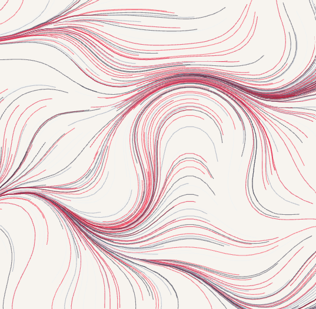
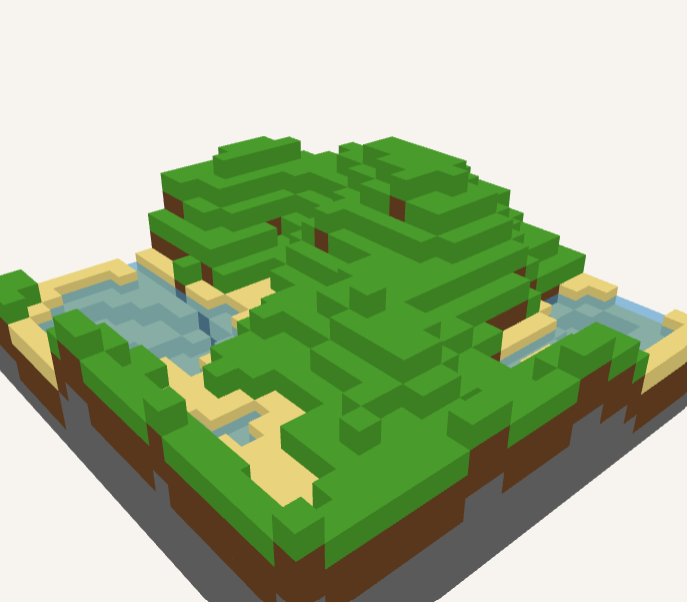
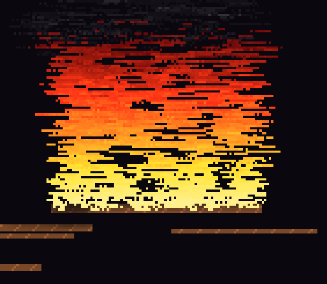
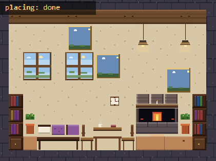
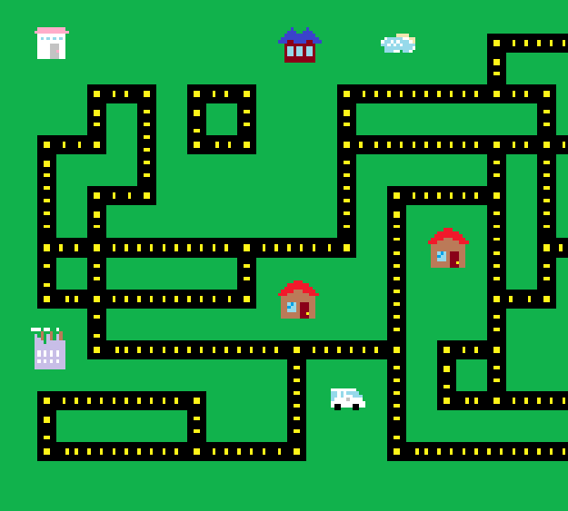
with five interactive demos!
Procedural generation is the process of creating data or content automatically using algorithms or mathematical formulas, rather than manually. It allows for the creation of complex and diverse content quickly and efficiently.
Procedural generation is used in a wide range of applications, including:
today i want to go the art and worlds route and show you some cool examples of what we can do with procedural generation.
it is desirable for a number of applications to generate worlds and simulations which mirror the real world.
however, the seeming randomness of nature is difficult to match. the real world is not random so it requires more complex algorithms to emulate it.
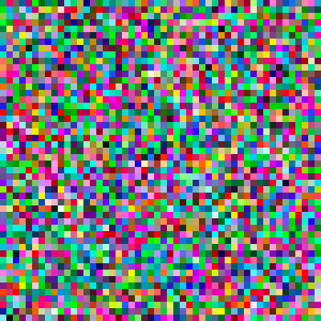
true random looks like pure noise
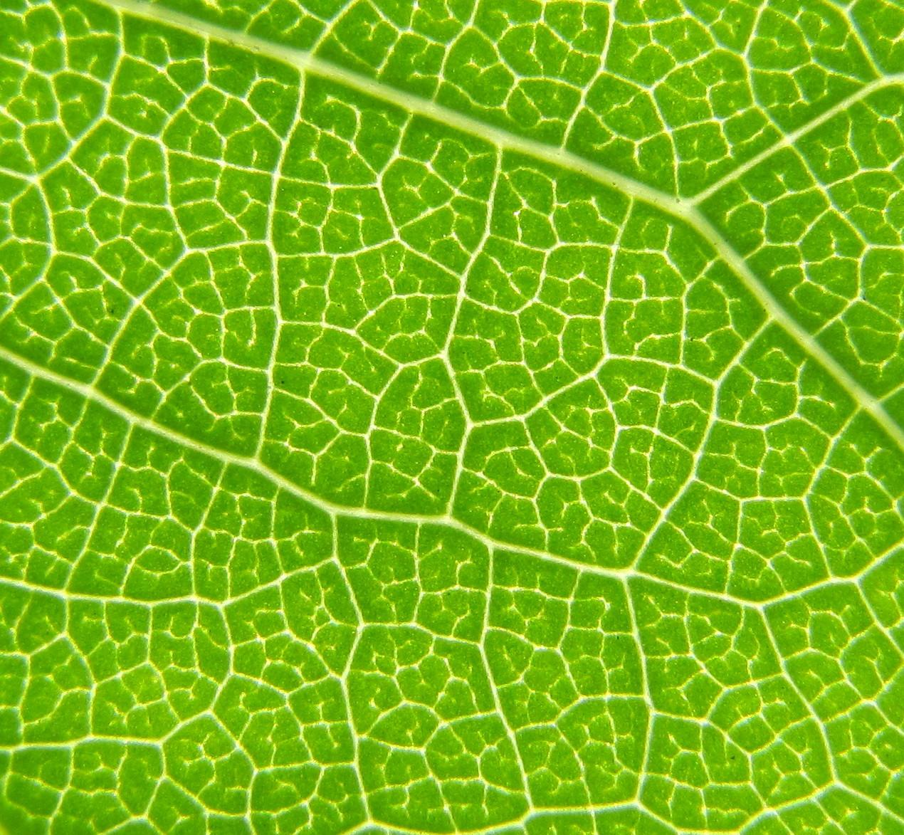
complex patterns exist everywhere in nature
weve been doing procedural generation since the 70's in video games
things have steadily improved not just in games but across other industries like film, art, and simulations
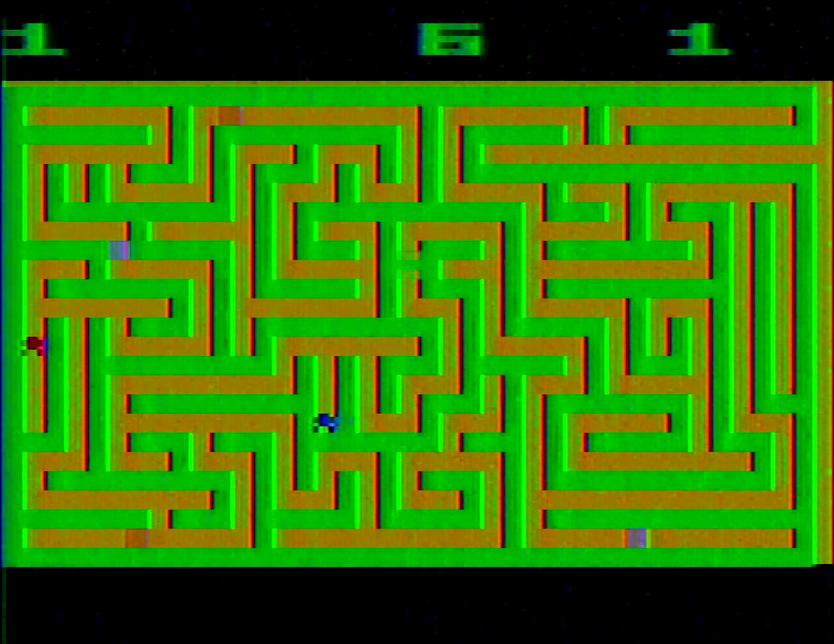
maze craze - 1978
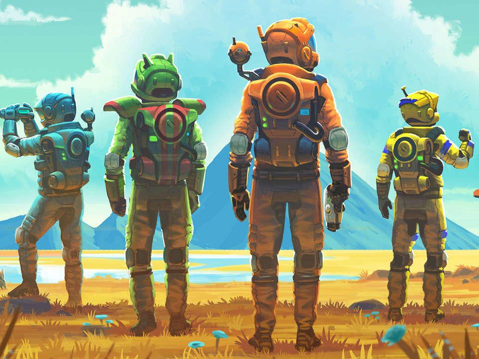
no mans sky - famed for massive fully procedural open world
there are many famous algorithms and projects in this field, here are some favorites:
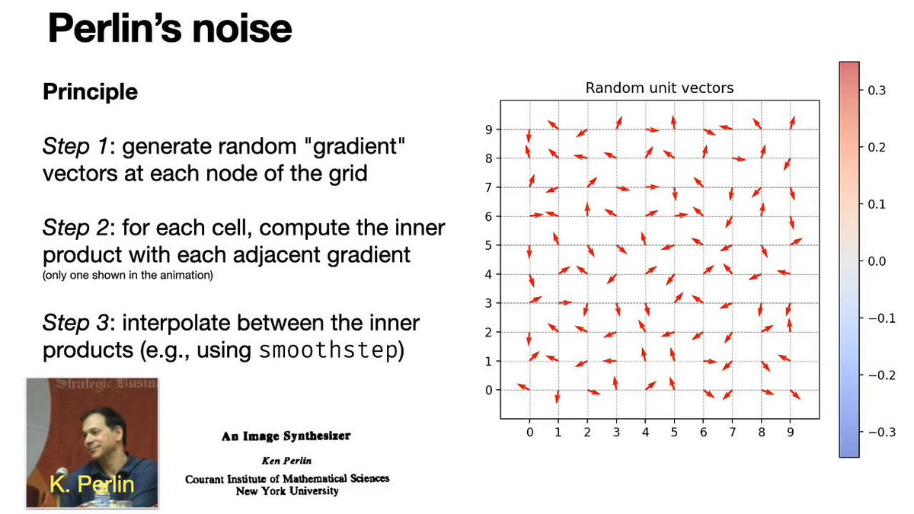
perlin noise
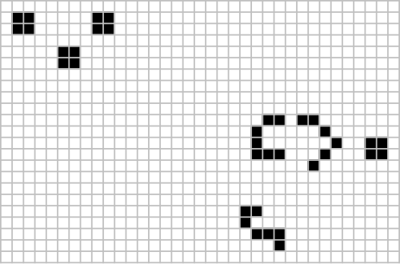
conways game
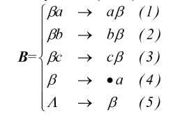
markov rules
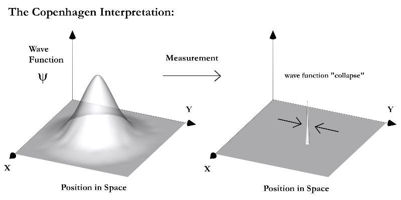
wave function
a grid of angles steers many curves across the canvas. technique adapted from Tyler Hobbs
every cell in the grid calulates a value with the perlin noise function. we are able to interpret those values as an angle in order to generate a smooth flow field.
thousands of curves start at random points, read the angle under their head, step forward a few pixels, and repeat. adjusting the noise type and intensity changes the behavior of the curves.
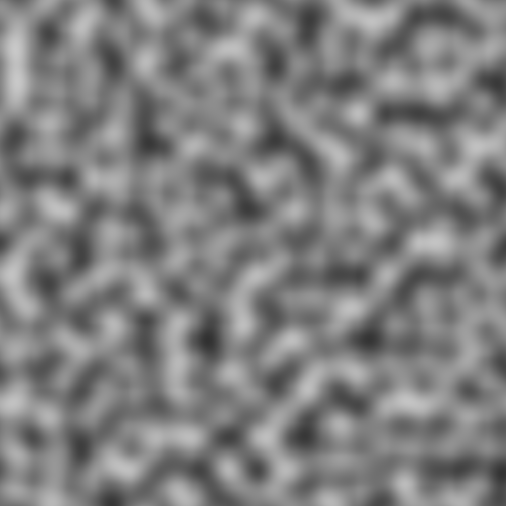
sample perlin noise
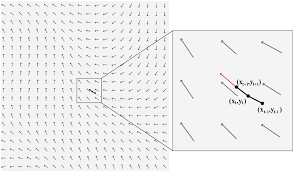
interpret noise values as a flow field
initialize RNG and perlin noise field
for each grid cell (row, col):
n <- noise(col * scale, row * scale) // approximately [-1, 1]
angle <- (n + 1) * PI // map to [0, 2*pi]
for each curve:
(x, y) <- random point on canvas
repeat curveLength times:
a <- grid angle at (x, y)
x <- x + cos(a) * step
y <- y + sin(a) * step
draw segment from previous to current point
small voxel chunk whose heightmap is driven by layered Perlin noise
we build a 2D heightmap with fractal brownian motion (layered perlin at increasing frequency, decreasing amplitude). then we just color up to each block based on its height
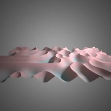
fractal brownian example
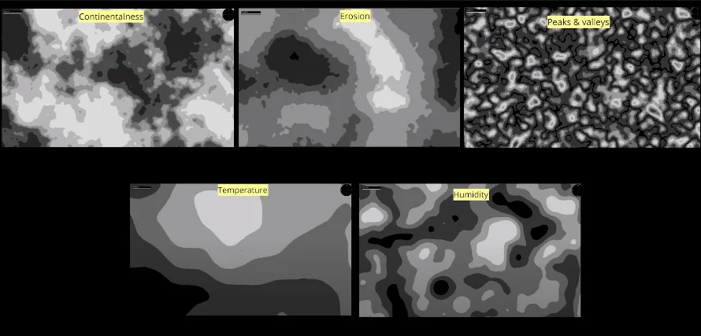
stacking noise can give us different terrain looks
for z in 0..N-1:
for x in 0..N-1:
t <- normalize(fbm(perlin, x * noiseScale, z * noiseScale, octaves))
height[x, z] <- round(t * (maxH - 1))
for each (x, z) with column height h:
emit top face at y <- h - 1 with surface color (water, snow, grass, ...)
for each neighbor direction:
if neighbor height < h:
emit side quads between neighbor top and h
cellular automaton that can roughly simulate the behavior of fire with simple rules
three parallel grids per cell: heat, fuel, smoke.
cells are a fun programming challenge and they can be used to simulate super interesting and complex mechnics just by following basic rules
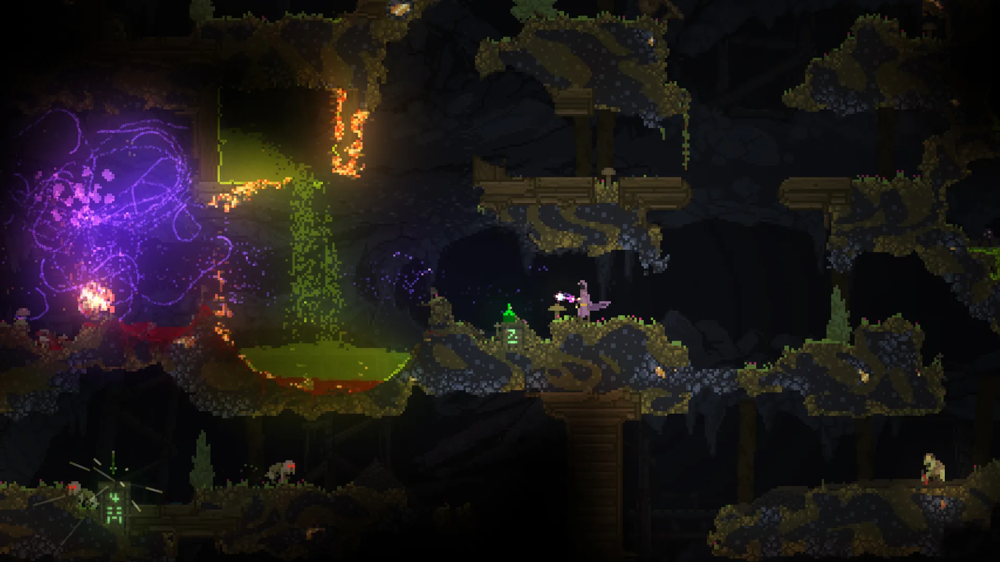
noita is a super cool game that uses cells to simulate physics
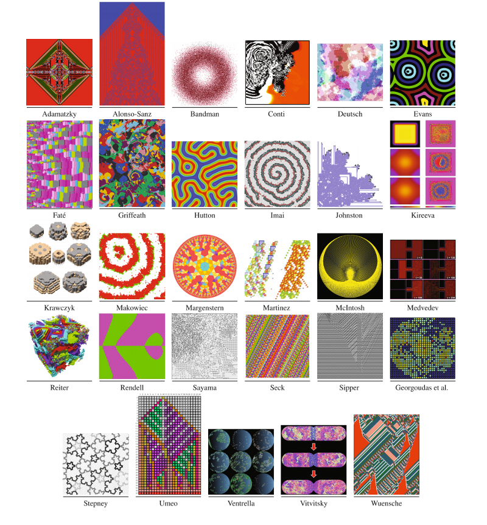
cell art by Claudio Conti
each tick:
for each cell with fuel:
if heat >= ignition:
heat <- burnTemp
fuel <- fuel - 1
if fuel == 0:
spawn smoke above and maybe char neighbors
else if any neighbor is hot:
with probability P, heat <- heat + bump
diffuse heat slightly
apply wind to smoke
decay heat and smoke by their rates
write pixels: heat -> fire palette, smoke tint on top
we randomly place furniture across the room based on replacement rules
The room is a 2D tile grid which maps to numbers cooresponding to drawable items: stone, wallpaper, wood, furniture.
A list of rewrite rules runs in order: each rule defines a and a replacement. we find matches, picks one at random, run the next rule, then repeat
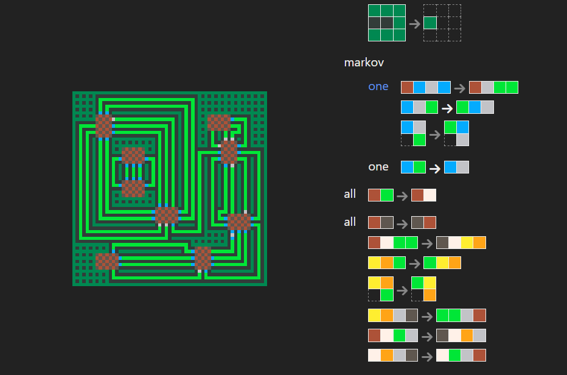
this examples defines colors as symbols in a grammar and uses them to make a circuit board
rules <- [fireplace, bookshelves, bed, table, ...] // wide pieces first
function step():
for each rule in rules:
if rule budget is exhausted:
continue
matches <- []
for each variant in rule rotations:
matches <- matches + all top-left positions where pattern matches grid
if matches is empty:
continue
pick random match and stamp replacement onto grid
rule budget <- rule budget - 1
return // one successful rewrite per step (engine design)
repeat step() until no rule matches or cap reached
render by mapping each tile code to rectangle colors/pixels
a city created by connecting compatible sockets until a grid is filled
unlike the room’s ordered rewrite rules, WFC keeps local agreement
pieces have rules about what they can connect to and what they cant, we seed the outside and then each uncertain tile checks its neighbors to see if it can 'collapse' into a certain piece
if a piece has no neighbors then it is equally likely to be all pieces but if it has 4 neighbors it is likely that only one peice will fit
rim <- collapsed to grass
while a cell exists with |options| > 1:
c <- cell with fewest options (minimum entropy)
pick one tile at c (weighted)
at c, set options <- {that tile}
queue <- {c}
propagate constraints to neighbors
if any cell has 0 options:
reseed RNG and retry